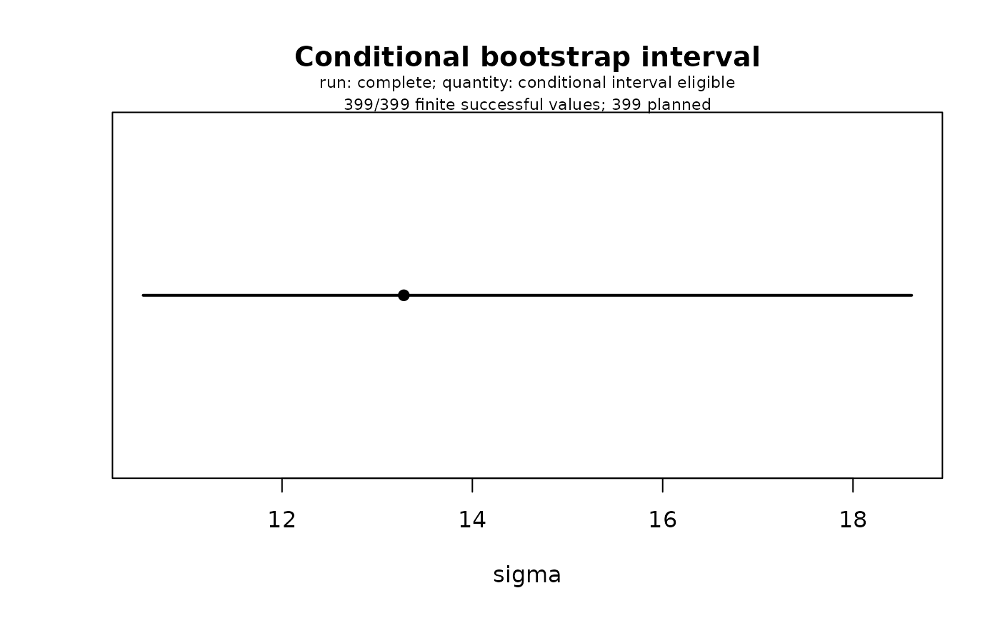
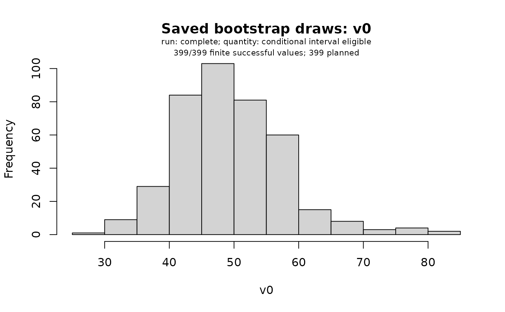

Inspect a saved facility bootstrap
Source:R/07-allocation_results.R
allocation-bootstrap-methods.RdThese methods display saved results, including refused original fits, unfinished attempts and unavailable intervals. Counts distinguish planned, attempted and successful fits; each quantity retains its own finite-success count and reporting status. Fixed-input identities have no sampling interval.
Usage
# S3 method for class 'ae_allocation_bootstrap'
print(x, digits = 4, ...)
# S3 method for class 'ae_allocation_bootstrap'
summary(object, ...)
# S3 method for class 'summary.ae_allocation_bootstrap'
print(x, digits = 4, ...)
# S3 method for class 'ae_allocation_bootstrap'
plot(x, quantity = NULL, type = c("interval", "draws"), ...)Value
summary() returns saved estimates, original fit, status, counts,
diagnostics, capacity support and declarations (and the coverage note, when
the result has one) in a summary.ae_allocation_bootstrap object.
Print and plot methods return their input invisibly.
Details
plot() displays one named saved quantity. Its default is the first saved
quantity. The interval view draws a saved point and available percentile
endpoints only when the overall run is complete and that quantity's saved
status permits reporting; an unavailable interval is labelled explicitly. This
also suppresses stale finite endpoints in refused or incomplete saved objects.
The draw view plots
finite values from successful attempted fits, retaining inner boundaries and
displaying the number plotted. Neither view implies empirical observation-law
validation, simultaneous coverage or causal interpretation of a scenario.
Examples
# A stored result: the 399-attempt bootstrap of the guide
# vignette("facility-bootstrap", package = "spax"), on a generated network,
# with a scenario of more supply at one facility
boot <- readRDS(system.file("extdata", "allocation-bootstrap.rds", package = "spax"))
# The run, its attempts and the intervals
boot
#> <allocation bootstrap>
#> status: complete
#> planned attempted successful
#> 399 399 399
#> failed attempts: 0; retained inner-boundary attempts: 0
#> sampling: independent_facilities; event: allocated service requests; period: one_reference_period
#> supply (service_slots): total: 280; attributed: 280; unsupported: 0
#> facilities: total: 40; with retained-demand support: 40; positive supply without support: 0
#> fixed inputs: demand, supply, travel, included network and support policy
#> regional_A is supported raw supply per retained need; positive supply
#> with no finite edge on retained demand support is excluded from
#> attributed capacity and disclosed separately
#> Conditional percentile intervals; coverage evidence is limited to the
#> package's coverage study, a fixed 80-origin/40-facility generated
#> design. Facility independence and the empirical observation law are
#> assumptions. No simultaneous-map or causal coverage claim.
#> Available bounds: conditional bootstrap intervals.
#> quantity estimate lower upper status
#> sigma 13.28000 10.5400 18.6200 conditional_pointwise_bootstrap
#> v0 48.58000 35.0300 69.0700 conditional_pointwise_bootstrap
#> regional_rho 0.67110 0.6511 0.6897 conditional_pointwise_bootstrap
#> delta_contacts 9.87200 8.9080 11.0200 conditional_pointwise_bootstrap
#> regional_A 0.03041 NA NA fixed_input_identity
#> successful attempted planned
#> 399 399 399
#> 399 399 399
#> 399 399 399
#> 399 399 399
#> 399 399 399
summary(boot)$counts
#> planned attempted successful
#> 1 399 399 399
# The interval of sigma, and the draws of v0
plot(boot)

plot(boot, quantity = "v0", type = "draws")

# Every attempt, as a table
head(as.data.frame(boot, type = "draws"))
#> attempt seed status success sigma v0 boundary best_start
#> 1 1 20260931 selected TRUE 12.86513 48.73043 FALSE scan1
#> 2 2 20260932 selected TRUE 13.21244 50.51980 FALSE scan1
#> 3 3 20260933 selected TRUE 12.14212 40.43821 FALSE scan1
#> 4 4 20260934 selected TRUE 12.43516 42.49469 FALSE scan1
#> 5 5 20260935 selected TRUE 12.10434 43.16452 FALSE scan1
#> 6 6 20260936 selected TRUE 14.70454 53.31157 FALSE scan2
#> loss score_norm regional_rho delta_contacts regional_A
#> 1 -24662.98 1.863487e-08 0.6615665 10.107813 0.03041016
#> 2 -26035.29 1.692454e-06 0.6610622 10.005567 0.03041016
#> 3 -26106.98 2.820174e-07 0.6856066 10.067934 0.03041016
#> 4 -25975.61 1.041708e-06 0.6817678 10.012932 0.03041016
#> 5 -24227.62 2.861920e-08 0.6706570 10.268063 0.03041016
#> 6 -26422.12 5.651187e-08 0.6775333 9.425824 0.03041016